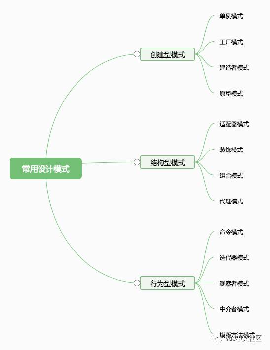
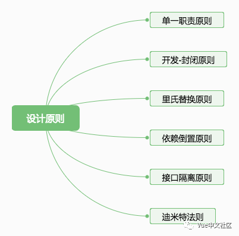

假设我们有一个这样的需求：
let page = { init: ()=>{
//此处(placeA)有很多业务代码或者调用了很多page中的其他初始化函数
},
....
};
现在业务迭代，需要我们在page.init()初始化代码块的最后增加一些功能，同时不影响原先的功能。按照正常的写法，我们可能会像下面这样写：
let page = { init: ()=>{ //placeA
page.newFunction();
}, newFunction: ()=>{
...
}
};
这
样写是可以解决我们的需求，但是这样的代码是具有侵略性的，我们不得不在原先的代码的合适位置新增我们需要的代码。但我们思考一个问题，如果我们用了某个
插件或者某个被ungly、minify之后的代码呢，我们怎么在找到合适的位置添加我们需要的功能呢？大家可以先自己思考一下，再看下面的内容。
首先我们先看解决方案，再思考其背后的东西。
//我们可以在Function的原型链上定义一个扩展函数，以实现我们的需求。
Function.prototype.fnAfter = function(fn) {
var _self = this; return function() {
_self.apply(this, arguments);
fn.apply(this, arguments);
}
};
page.init = (page.init || function() {}).fnAfter(function() {
console.log('我们要追加的功能成功啦~');
});
page.init();
上
面的代码已经能够实现我们的需要了，但是其实还是不够好或者可以写的更灵活一些。因为我希望可以可以做到像jquery的链式调用那样，可以一直往后面追
加新的功能。那么我们在上面代码的基础上再扩展下，其实很简单，我们只要再Function.prototype.fnAfter中再返回自身就好了。
Function.prototype.fnAfter = function(fn) {
var _self = this;
return function() {
var fnOrigin = _self.apply(this, arguments);
fn.apply(this, arguments);
return fnOrigin;
}
};
其实上面的代码写法还是可以优化的。比如：
//每次扩展的时候我们都需要这么写
page.init = (page.init || function() {}).fnAfter(function() { //...});
//我们能不能再优化下，比如容错代码 || function(){} 在一个地方统一处理
//或者我们新建一个工厂函数来帮我们统一做这样的事情，这里我们就不展开了，文章篇幅有限。
我
们上面的扩展其实就是遵循的是面向对象程序设计中的开放-封闭原则（OCP）。官方对OCP的解释是：软件实体（类、模块、函数...）应该是可以扩展
的，但是不可修改。设计模式中有很多模式都遵循了开发-封闭原则，比如：发布-订阅者模式、模板方法模式、策略模式、代理模式。
有的时候我们通过扩展来提高代码的灵活性并不能解决所有的场景需要，在不可避免发生修改的时候，我们可以通过增加配置文件，让用户修改配置文件以实现个性化需求也是合理的。修改配置远比修改源代码要简单的多。
有了上面的引入，我们来看几个前端开发中常见的设计模式。
单例模式
单例模式顾名思义：保证一个类仅有一个实例，
并且对外暴露一个能够访问到它的访问点。
实现单例模式的核心就是保证一个类仅有一个实例，那么意思就是当创建一个对象时，我们需要判断下之前有没有创建过该实例，如果创建过则返回之前创建的实例，否则新建。

日常的业务场景中，单例模式也比较常见，比如：一个页面中的模态框只有一个，每次打开与关闭的都应该是同一个，而不是重复新建。而且为了性能优化，我们应该在需要时再创建，而不是页面初始化时就已经存在于dom中，这个就是惰性单例模式。

上面的代码中，我们将创建对象和管理实例的逻辑都放在一个地方，违反了单一职责原则，我们应该单独新建一个用于创建单例的方法，这样我们不仅能创建唯一的modal实例，也能创建其他的，职责分开。

观察者模式
定义了对象与其他对象之间的依赖关系，
当某个对象发生改变的时候，所有依赖到这个对象的地方都会被通知。
像knockout.js中的ko.compute以及vue中的computed函数其实就是这个模式的实践。实现观察者模式的核心就是我们需要有一个变量来保存所有的依赖，一个listen函数用于向变量中添加依赖，一个trigger函数用于触发通知。

使用观察者模式（发布-订阅模式）我们可以使得代码更灵活、健壮性更高。订阅者不需要了解消息来自哪一个发布者，发布者也不需要知道消息会发送给哪些订阅者。
同样的我们可以创建一个公用的函数库，里面存放创建observal的工具方法，需要用到的地方我们就用这个方法创建一个发布订阅对象。
其他设计模式及设计原则
设计模式有很多，这里篇幅有限就不再展开。GoF在1995年提出了23种设计模式。诸如策略者模式优化表单验证、代理模式、组合模式、装饰者模式、适配器模式...这些后期可以再简单探讨或者大家后面自己了解。常用的设计模式及设计原则可以参考下面的思维导图。

常用设计模式

六大设计原则
看了上面的文章，相信大家对设计模式的好处有了直观的了解，也大致掌握了单例模式及观察者模式。
设计模式都是经过了大量的代码、软件实践而总结出来的优秀的组织实践方案。每种设计模式都有它的适应场景，有的场景也会使用多种设计模式。只有了解了更多的设计模式，掌握各个设计模式自己的适应场景，才能更好的为我们所用。
但是过早的优化不一定是好事或者不是必须的，
有时候我们可以一开始并不去优化，等到某个应用场景下出现了代码组织混乱、需要额外扩展等问题，我们再优化重构，以防过早优化导致的不必要性或者只是增加
了代码不必要的复杂性。就像redux，如果一个页面组件与组件之间有数据共享、需要在任意组件内部拿到某个数据、任意一个组件中某个行为导致的数据变化
需要通知到所有用到的地方，那么这个时候可以使用redux，一些简单的表单页面或者展示页完全可以不用redux。
作者:晓飞
原文链接:https://juejin.im/post/59f29fda518825549f7260c9